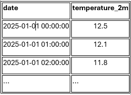

Veamos varios ejemplos sencillos para relacionar teoría y práctica.
Ejemplo 1: Extracción desde un CSV (datos estructurados)
- Tenemos un fichero CSV con una lista de clientes:
https://raw.githubusercontent.com/josedavidmi/iabd-sbd/refs/heads/main/clientes.csv- Columnas: nombre, edad, ciudad.
- Nuestro objetivo es obtener solo los clientes de Madrid que tengan más de 30 años.
En Python (usando Pandas) podríamos:
- Usar df = pd.read_csv('clientes.csv') para cargar los datos en un DataFrame (una tabla).
- Aplicar un filtro encadenado con la lógica:
df_filtrado = df[(df['ciudad'] == 'Madrid') & (df['edad'] > 30)]. - El resultado (df_filtrado) es una tabla con solo los clientes que cumplen esas condiciones.
Hemos realizado una extracción de información filtrando un conjunto de datos más grande, lo que nos deja la información lista para el análisis.
Solución: https://colab.research.google.com/drive/1CPaRcZNcPMXLAwHdfv6KEuQpBUz1G1j_?usp=sharing
Ejemplo 2: Extracción desde una API (datos semiestructurados)
- Queremos obtener el pronóstico de temperatura por hora para el día actual en una ubicación específica (Castro Urdiales), y transformar los datos semiestructurados (JSON) de la API en una tabla (DataFrame) limpia y lista para el análisis.
Solución en Python (Integración API + Pandas)
La API de Open-Meteo nos proporciona los datos en un formato optimizado, donde las variables (temperaturas) y las series de tiempo están separadas. El proceso de extracción consiste en unir estos datos y meterlos en un DataFrame de Pandas.
- Configuración del Cliente de API: Se usan librerías como requests_cache y retry_requests para configurar el cliente de la API (openmeteo) con una capa de caché (para velocidad) y reintento (para fiabilidad), en lugar de una simple petición.
- Petición a la API (Extracción): Se define la URL y los parámetros de la consulta (coordenadas de Castro Urdiales y la variable temperature_2m). # Definición de la consulta
params = {
"latitude": 43.3828,
"longitude": -3.2204,
"hourly": "temperature_2m", # Variable solicitada
"forecast_days": 1,
}
# Llamada a la API
responses = openmeteo.weather_api(url, params=params) - Procesamiento y Transformación (Data Wrangling):
- La respuesta de la API contiene la serie de tiempo (marca de inicio, fin e intervalo) por un lado, y los valores de temperatura (como un array de números) por otro.
- Usamos Pandas (pd.date_range) para generar correctamente la columna de fechas/horas a partir de la serie de tiempo.
- Finalmente, unimos esta columna de tiempo con el array de temperaturas para crear el DataFrame final (hourly_dataframe).
El resultado es una tabla con dos columnas: date y temperature_2m, perfecta para el análisis posterior.

Conceptos Reforzados
- API como fuente estructurada: Aunque el formato de la respuesta (JSON) es semiestructurado, la API garantiza que los datos vengan en una estructura predecible.
- Transformación Obligatoria: En este caso, la extracción de los datos del objeto response y su transformación en un DataFrame (pd.DataFrame) son pasos obligatorios para hacerlos utilizables y analizables.
- Fiabilidad: El uso de caché y reintento muestra una práctica profesional en la extracción de datos: priorizar la velocidad y la tolerancia a fallos.
Solución: https://colab.research.google.com/drive/13w9YOpfMhjh49lAb3UY2MOpfw_UVrA1H?usp=sharing
Ejemplo 3: Scraping de una web (datos no estructurados)
Queremos conocer los precios de una lista de productos en una tienda online.
- Accedemos a la página web de la tienda.
- Un programa de scraping lee el HTML de la página.
- Identificamos dentro del código:
- el nombre del producto,
- el precio.
- Guardamos esa información en una tabla (por ejemplo, CSV o Excel) con columnas:
- producto, precio.
Más adelante podemos:
- Comparar precios entre varias tiendas.
- Analizar subidas y bajadas de precio.